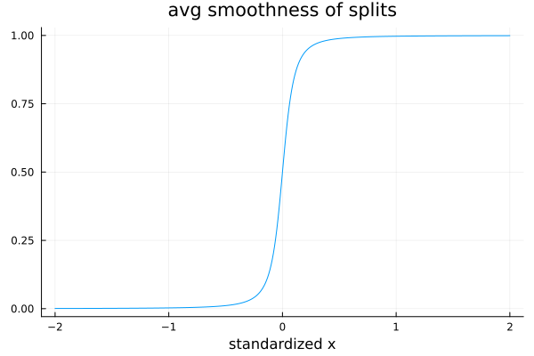

Basic use
Summary
- Illustrates use of the main functions of HTBoost on a regression problem with simulated data.
- param.modality as the most important user's choice, depending on time budget.
- In default modality, HTBoost performs automatic hyperparameter tuning.
Main points
- default loss is :L2. Other options for continuous y are :Huber, :t (recommended in place of :Huber), :gamma, :gammaPoisson, :L2loglink. For zero-inflated continuous y, options are :hurdleGamma, :hurdleL2loglink, :hurdleL2
- default is block cross-validation with nfolds=4: use randomizecv = true to scramble the data. See Time series and panels and Global Equity Panel for further options on cross-validation (e.g. sequential cv, or generally controlling the training and validation sets).
- fit, with automatic hyperparameter tuning if modality is :compromise or :accurate
- save fitted model (upload fitted model)
- average τ (smoothness parameter), which is also plotted. (Smoother functions ==> larger gains compared to other GBM)
- feature importance
- partial effects plots
Import HTBoost for distributed parallelization on the desired number of workers.
This step is not required by other GMBs, which rely on shared parallelization. The time to first plot increases with the number of cores. HTBoost parallelizes well up to 8 cores, and quite well up to 16 if p/#cores is sufficiently high.
number_workers = 8 # desired number of workers
using Distributed
nprocs()<number_workers ? addprocs( number_workers - nprocs() ) : addprocs(0)
@everywhere using HybridTreeBoosting
# import required packages for this script; JLD2 only required to save and import output
using Random,Plots
using JLD2
Options for HTBparam( ).
I prefer to specify parameter settings separately (here at the top of the script) rather than directly in HTBparam( ), which is of course also possible. modality is the key parameter: automatic hyperparameter tuning if modality is :compromise or :accurate, no tuning (except of #trees) if :fast or :fastest. In HTBoost, it is not recommended that the user performs hyperparameter tuning by cross-validation, because this process is done automatically if modality is :compromise or :accurate. The recommended process is to first run in modality=:fast or :fastest, for exploratory analysis and to gauge computing time, and then switch to :compromise (default) or :accurate. For a tutorial on user-controlled cross-validation, see User's controlled cross-validation.
Random.seed!(1)
# Options for HTBparam()
loss = :L2 # :L2 is default. Other options for regression are :L2loglink (if y≥0), :t, :Huber
modality = :fastest # :accurate, :compromise (default), :fast, :fastest
priortype = :sharp # :hybrid (default) or :smooth to force smoothness (typically not recommended)
nfold = 1 # number of cv folds (default 4)
nofullsample = true # if true and nfold=1, no re-fitting on the full sample after validation
verbose = :Off
warnings = :OnOptions for cross-validation:
While the default in other GBM is to randomize the allocation to train and validation sets, the default in HTBoost is block cv, which is suitable for time series and panels. Set randomizecv=true to bypass this default. See Global Equity Panel for further options on cross-validation (e.g. sequential cv, or generally controlling the training and validation sets).
randomizecv = false # false (default) to use block-cv.
Options to generate data.
y is the sum of six additive nonlinear functions, plus Gaussian noise.
n,p,n_test = 10_000,6,100_000
stde = 1.0
f1(x,b) = @. b*x + 1
f2(x,b) = @. 2*sin(2.5*b*x)
f3(x,b) = @. b*x^3
f4(x,b) = @. b*(x < 0.5)
f5(x,b) = @. b/(1.0 + (exp(4.0*x )))
f6(x,b) = @. b*(-0.25 < x < 0.25)
b1,b2,b3,b4,b5,b6 = 1.5,2.0,0.5,4.0,5.0,5.0
End of user's options.
# Generate data.
x,x_test = randn(n,p), randn(n_test,p)
f = f1(x[:,1],b1)+f2(x[:,2],b2)+f3(x[:,3],b3)+f4(x[:,4],b4)+f5(x[:,5],b5)+f6(x[:,6],b6)
f_test = f1(x_test[:,1],b1)+f2(x_test[:,2],b2)+f3(x_test[:,3],b3)+f4(x_test[:,4],b4)+f5(x_test[:,5],b5)+f6(x_test[:,6],b6)
y = f + stde*randn(n)
# set up HTBparam and HTBdata, then fit and predit
param = HTBparam(loss=loss,priortype=priortype,randomizecv=randomizecv,nfold=nfold,verbose=verbose,
warnings=warnings,modality=modality,nofullsample=nofullsample)
data = HTBdata(y,x,param)
@time output = HTBfit(data,param)
yf = HTBpredict(x_test,output)
# save (load) fitted model with JLD2
@save "output.jld2" output
@load "output.jld2" output Feature importance and average smoothing parameter for each feature.
tau is the smoothness parameter; lower values give smoother functions, while tau=Inf is a sharp split (tau is truncated at 40 for this function). avgtau is a summary of the smoothness of f(x), with features weighted by their importance. avgtau_a is a vector array with the importance weighted tau for each feature.
avgtau,gavgtau,avgtau_a,dftau,x_plot,g_plot = HTBweightedtau(output,data,verbose=true);
plot(x_plot,g_plot,title="avg smoothness of splits",xlabel="standardized x",label=:none)The plot gives an idea of the average (importance weighted) smoothness across all splits....
<img src="./../assets/avgtau.png" width="400" height="250">

... which in this case is a mix of very different values across features: approximate linearity for x1, smooth functions for x3 and x5, and essentially sharp splits for x2, x4, and x6:
Row │ feature importance avgtau sorted_feature sorted_importance sorted_avgtau
│ String Float32 Float64 String Float32 Float64
─────┼──────────────────────────────────────────────────────────────────────────────────
1 │ x1 14.5666 0.458996 x3 19.0633 3.30638
2 │ x2 12.9643 19.6719 x5 18.6942 3.72146
3 │ x3 19.0633 3.30638 x6 17.9862 35.1852
4 │ x4 16.7254 36.0846 x4 16.7254 36.0846
5 │ x5 18.6942 3.72146 x1 14.5666 0.458996
6 │ x6 17.9862 35.1852 x2 12.9643 19.6719
Average smoothing parameter τ is 7.3.
In sufficiently large samples, and if modality=:compromise or :accurate
- Values above 20-25 suggest very little smoothness in important features. HTBoost's performance may slightly outperform or slightly underperform other gradient boosting machines.
- At 10-15 or lower, HTBoost should outperform other gradient boosting machines, or at least be worth including in an ensemble.
- At 5-7 or lower, HTBoost should strongly outperform other gradient boosting machines.Some examples of smoothness corresponding to a few values of tau (for a single split) help to interpret values of avgtau
<img src="../assets/Sigmoids.png" width="600" height="400">

On simulated data, we can evaluate the RMSE from the true f(x), exluding noise:
println(" \n modality = $(param.modality), nfold = $nfold , priortype = $(param.priortype)")
println(" depth = $(output.bestvalue), number of trees = $(output.ntrees), gavgtau $gavgtau ")
println(" out-of-sample RMSE from truth ", sqrt(sum((yf - f_test).^2)/n_test) )Hybrid trees outperform both smooth and standard trees
Here is the output for n=10k (nfold=1, nofullsample=true). Hybrid trees strongly outperform both smooth trees and standard symmetric (aka oblivious) trees. (Note: modality = :sharp is a very inefficient way to run a symmetric tree; use CatBoost or EvoTrees instead!)
modality = fastest, nfold = 1, priortype = hybrid
depth = 5, number of trees = 141, gavgtau 7.3
out-of-sample RMSE from truth 0.3136
modality = fastest, nfold = 1, priortype = smooth
depth = 5, number of trees = 121, gavgtau 4.5
out-of-sample RMSE from truth 0.5751
modality = fastest, priortype = sharp
depth = 5, number of trees = 183, avgtau 40.0
out-of-sample RMSE from truth 0.5320Feature importance and partial dependence plots
Variable (feature) importance is computed as in Hastie et al., "The Elements of Statistical Learning", second edition, except that the normalization is for sum=100. Partial dependence assumes (in default) that other features are kept at their mean.
fnames,fi,fnames_sorted,fi_sorted,sortedindx = HTBrelevance(output,data,verbose=false);
q,pdp = HTBpartialplot(data,output,[1,2,3,4,5,6]) # partial effects for the first 6 variables
# plot partial dependence
pl = Vector(undef,6)
f,b = [f1,f2,f3,f4,f5,f6],[b1,b2,b3,b4,b5,b6]
for i in 1:length(pl)
pl[i] = plot( [q[:,i]],[pdp[:,i] f[i](q[:,i],b[i]) - f[i](q[:,i]*0,b[i])],
label = ["HTB" "true"],
legend = :bottomright,
linecolor = [:blue :red],
linestyle = [:solid :dot],
linewidth = [6 3],
titlefont = font(15),
legendfont = font(12),
xlabel = "x",
ylabel = "f(x)"
)
end
display(plot(pl[1],pl[2],pl[3],pl[4],pl[5],pl[6],layout=(3,2), size=(1300,800)))Partial plots for n = 1k,10k,100k, with modality = :fastest and nfold = 1. Notice how plots are smooth only for some features.
n = 1_000

n = 10_000

n = 100_000